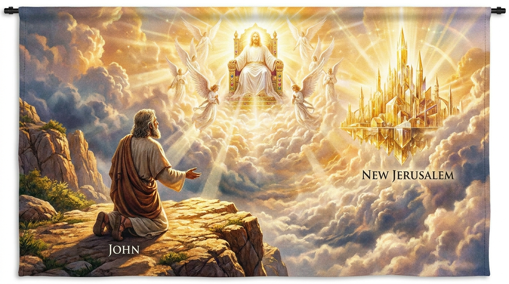

A Revelação Final e o Triunfo de Cristo
O Apocalipse é o grandioso fechamento da Bíblia, escrito pelo apóstolo João enquanto estava exilado na ilha de Patmos. Longe de ser apenas um livro de terror ou enigmas sem solução, o Apocalipse é uma "revelação" (o significado literal da palavra grega *apokalypsis*) de Jesus Cristo em toda a sua glória como Rei dos reis e Senhor dos senhores. Através de visões simbólicas, João encoraja as igrejas perseguidas de sua época e as gerações futuras, garantindo que, apesar das aparências e do sofrimento presente, Deus está no controle da história. O livro narra o julgamento final do mal, a vitória definitiva de Cristo sobre Satanás e a promessa gloriosa da restauração de todas as coisas na Nova Jerusalém.
Ficha Técnica
- Autor: O apóstolo João.
- Tema Principal: A soberania de Deus, a vitória final de Jesus Cristo sobre o mal e a esperança da consumação eterna.
- Versículo-Chave: "Ele enxugará dos seus olhos toda lágrima. Não haverá mais morte, nem tristeza, nem choro, nem dor, pois a antiga ordem já passou." (Apocalipse 21:4)
Estrutura
- As cartas de Jesus às sete igrejas da Ásia (Caps. 1-3)
- Visões do trono celestial, os sete selos e as sete trombetas (Caps. 4-11)
- O conflito cósmico entre o Cordeiro e o Dragão/Besta (Caps. 12-18)
- A vitória final, o juízo do grande trono branco e o Novo Céu e Nova Terra (Caps. 19-22)